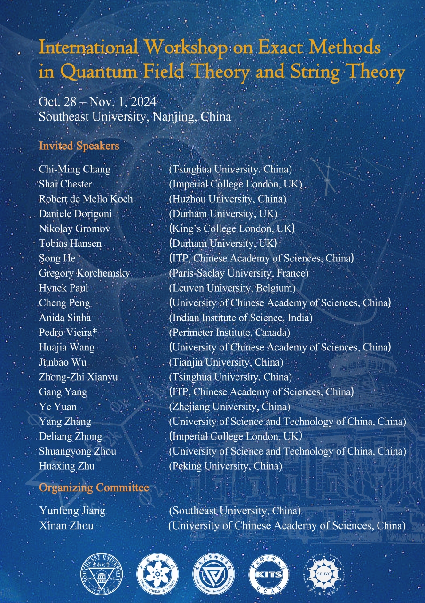

About the workshop
This workshop is organized by Kavli Institute of Theoretical Sciences of Chinese Academy of Sciences and Shing-Tung Yau Center of Southeast University. The goal is to bring together experts on exact computations of quantum field theories in quantum field theory and string theory. The topics include: integrability in AdS/CFT, holographic correlation functions, supersymmetric localization, resurgence in quantum field theory, etc.

Time and venue
The workshop will be from October 28 (registration day) to November 1, 2024. It will take place in Southeast Univeristy, Nanjing.
Invited speakers
- Chi-Ming Chang (Tsinghua University): Witten Indices of D0-Brane Quantum Mechanics
- Shai Chester (Imperial College London): Monopoles, duality, and deconfined quantum criticality [pdf]
- Robert de Mello Koch (Huzhou University): Constructive Holography
- Daniele Dorigoni (Durham University): Modular structures in N=4 supersymmetric Yang-Mills theory
- Nikolay Gromov (King's College London): QSC in AdS/CFT
- Tobias Hansen (Durham University): The AdS Veneziano amplitude [pdf]
- Song He (ITP, CAS): Scattering amplitudes, correlation functions and energy correlators
- Gregory Korchemsky (Paris-Saclay University): Tracy-Widom Distribution in Four-Dimensional Supersymmetric Yang-Mills Theories
- Hynek Paul (Leuven University): Holographic correlators beyond (half-)maximal supersymmetry
- Cheng Peng (Univerisity of Chinese Academy of Sciences): Chaotic-integrable transition in disordered models out of the blue
- Aninda Sinha (Indian Institute of Science & University of Calgary): Bootstrapping string theory with entanglement minimisation
- Pedro Vieira (Perimeter Institute): Huge Operators
- Huajia Wang (Univerisity of Chinese Academy of Sciences): Resurgence on TTbar deformed partition function
- Junbao Wu (Tianjin Univerisity): Three-point Functions in ABJM Theory and Integrable Boundary States
- Zhongzhi Xianyu (Tsinghua University): Recent progress in analytical studies of cosmological correlators
- Gang Yang (ITP, CAS): Form factor/Wilson loop duality and OPE
- Ellis Ye Yuan (Zhejiang University): All Five-point Kaluza-Klein Correlators and Hidden 8d Symmetry in AdS5xS3
- Yang Zhang (University of Science and Technology of China): On the analytic computation of 2loop 6point and 3loop 5point Feynman integrals
- Deliang Zhong (Imperial College London): Planar RG Flows on Line Defects
- Shuangyong Zhou (University of Science and Technology of China): Causality bounds, moment problems and multi-DoFs
- Hua Xing Zhu (Peking University): Unveiling symmetry in high energy scattering through the lens of energy correlators
Program

Organizers
Yunfeng Jiang (School of Physics and Shing-Tung Yau Center, Southeast University)
Xinan Zhou (Kavli ITS, University of Chinese Academy of Sciences)
Contact
Email your questions to organizers: jinagyf2008 at seu.edu.cn and xinan.zhou@ucas.ac.cn